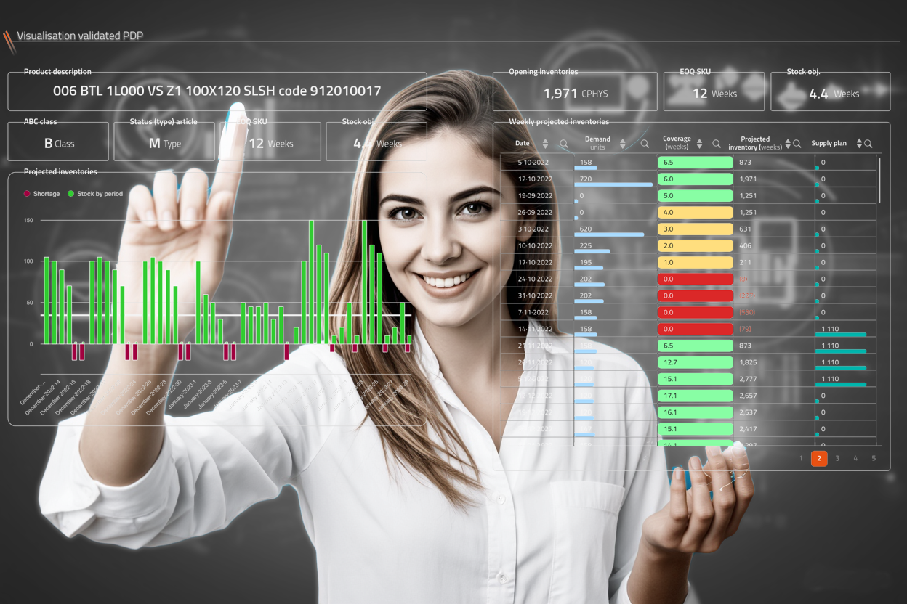
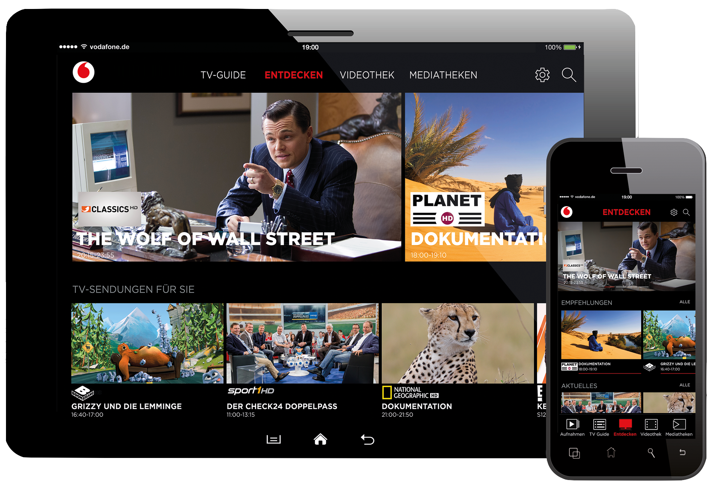

Product Leadership · Digital Transformation · AI Innovation
Riana Terter — product leader at the intersection of design, product, and engineering.
Over 15 years designing and leading digital products in multinational and mid-size organisations such as Sunstice, Cisco, and Infor — turning intricate business processes into clear, scalable, user-centred enterprise SaaS and data-intensive products.
Grown from Lead Product Design into product and project leadership — NN/g UX Management certified, PMP in preparation — I now explore how AI multiplies what one product mind can ship, documented publicly in #100AIExperiments. Fluent in English, French, and Romanian.
Scroll
Now · Ongoing Series
A public series of AI-powered products, games, and tools — designed and directed by me, with AI as the executor. Each experiment explores what one person with product vision and AI leverage can ship. New experiments land regularly — stay tuned.
Experiments shipped
Track Record · Case Studies
From global telecom to enterprise supply chain SaaS — product strategy and digital transformation for large-scale, multi-country platforms. Pick a case study to dive deeper.

Transformed a complex legacy ecosystem into a scalable, visual-first SaaS for L'Oréal, Heineken, and Royal Canin.

Launched the GigaTV experience across iOS, Android, mobile, and tablet for millions of users.
Delivered VOD and Replay TV across 7 countries, raising user satisfaction along the way.
Case Study
Commissioned to lead the full modernisation of a legacy system into BLOOM — a scalable, modular SaaS platform that puts user-centricity at the heart of supply chain management.
| Company | Sunstice (FuturMaster) |
| Period | 2017 – 2025 · 8 years |
| Role | Lead Product Designer |
| Teams | 8 international teams, France & China |
| Mentored | Up to 7 designers & integrators |
| Clients | L'Oréal, Heineken, Royal Canin, Total, Lactalis etc. |
| Tools | Adobe XD, Illustrator, Figma, Miro, Jira |
Platform Modules
Each module was shaped through iterative research, ideation, and close collaboration with stakeholders. Browse the catalog.
Deep Dive · Demand Planning Card
A full end-to-end redesign: from a legacy, table-based tool to a visual, graph-driven forecasting experience.
Design Thinking Journey
Before

Legacy · table-based · rigid
Key Pain Points
What We Changed
Process in action

Persona & experience map, built in workshops with Professional Services, Architects & Customer Success.

Crazy 8s and Design Studio sessions converged on a hybrid visual approach for basic and advanced users.

High-fidelity prototypes with realistic data — for stakeholder sign-off, developer handoff, and user testing.

One shared system kept all 7+ modules consistent across teams in France and China.
What Clients Say
Case Study
At Cisco's Design Studio, I collaborated with cross-functional teams across Europe, Asia, and the USA to deliver tailored TV and media experiences for Liberty Global and Vodafone — two of the world's largest telecom operators.
Liberty Global — The Challenge
Process
Monthly trips to Amsterdam for reviews, feedback collection, and roadmap discussions. Built trust by actively listening to country managers and addressing regional user needs.
Analysed feedback to refine existing features. Aligned future features (VOD, Replay) with Liberty Global's specific goals, ensuring scalability across all 7 countries.
Facilitated collaboration between Dutch client teams and Cisco's French Design Studio, resolving misalignments and establishing a lasting working model.
Led a cross-functional squad of PM, designer, product owner, and technical leader. Indirectly managed graphic and technical designers to align with Liberty Global's standards.
Impact
Significantly increased user satisfaction, validated by positive feedback from country managers across 7 markets
Transformed a tense partnership into a long-term collaborative relationship — improving Cisco's reputation within Liberty Global
Introduced VOD and Replay TV features, boosting adoption and market competitiveness
Liberty Global · TV set-top box
Improved set-top box experience, including VOD and Replay TV. Designed to work across multiple national markets with different content catalogues and cultural expectations.

Vodafone · Mobile app
Delivered a companion TV app across 4 platforms by balancing brand requirements, UX quality, and technical constraints for millions of users.

Cisco Design Studio
Additional custom TV experiences crafted through Cisco's multi-disciplinary design studio, serving other major telecom clients.

My Process
Not a checklist, but a way of working. Open a step to see how it translated into real decisions at Sunstice and at Cisco.
About
I'm a product professional with 15+ years of experience bringing clarity, vision, and innovation to complex enterprise systems — turning intricate business processes into coherent, scalable, modern products.
I started in design and grew into product and project leadership across multinationals and mid-size organisations (Sunstice, Cisco, Infor), backed by a degree in Informatics and a Master's in Visual Communication & Marketing. I'm equally at ease defining strategy, running discovery, aligning stakeholders, presenting to investors — or directing AI to ship products at a pace one person couldn't reach alone.
Having designed for users across many countries, I balance local specificities with global consistency — and I'm recognised for mentoring designers and influencing cross-functional, international teams across product, engineering, and business.
What I'm Looking For
A product, transformation, or innovation leadership role on complex, high-stakes products.
I thrive in structured organisations that value vision, collaboration, and long-term thinking — helping clarify direction, align stakeholders, and drive transformation at scale.
Career at a Glance
Lead Product · Enterprise SaaS & Supply Chain
Senior Product Designer · Telecom & Media
UX Engineer · Business Intelligence
Product, UX & UI Designer · SaaS & Mobile
UI Engineer · Enterprise Prototyping
Product & Strategy
UX & Design
AI & Prototyping
Tools & Delivery
Languages
Education & Certifications
In Progress
Project Management Professional (PMP)
Project Management Institute
January 2026
Conduire et piloter un projet innovant avec des méthodes agiles
Oriion
April 2025
UX Management Certification
Nielsen Norman Group
2006 – 2008
Master of Arts · Visual Communication & Marketing
West University of Timisoara
2002 – 2006
Bachelor of Science · Informatics
West University of Timisoara
Domains & Industries
Contact
I'm open to product, transformation, and innovation roles in organisations building complex, high-impact products.